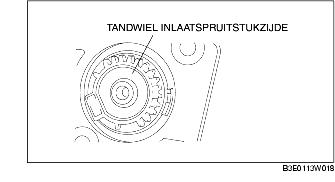

VERWIJDEREN/PLAATSEN SERVO REGELKLEP VARIABEL LUCHTWERVELSYSTEEM [ZJ, Z6]
B3E011320130W03
-
Opmerking
-
• Let op de volgende zaken na het verwijderen van de servo, om abnormale slijtage en blokkering van het tandwiel te voorkomen. Daardoor kan namelijk de regelklep defect raken.
-
- Trek het tandwiel aan inlaatspruitstukzijde er niet uit.

-
- Zorg ervoor dat het tandwiel aan inlaatspruitstukzijde niet verontreinigd raakt.
-
- Zorg ervoor dat de binnenzijde van de servo niet verontreinigd raakt.
-
• Als de servo en houder onjuist geplaatst zijn, kan het tandwiel geblokkeerd raken, wat kan leiden tot een defecte regelklep. Plaats, om dit te voorkomen, de servo en de regelklep zoals beschreven in de volgende procedure:
1. Neem de minkabel van de accu los.
2. Voer de volgende procedure uit zodat u er gemakkelijker bijkunt.
Europa (LHD)
-
1. Verwijder het luchtfilter. (Zie VERWIJDEREN/PLAATSEN LUCHTINLAATSYSTEEM [ZJ, Z6].)
GB
-
1. Plaats het luchtdeksel ergens waar het niet in de weg zit. (Zie VERWIJDEREN/PLAATSEN LUCHTINLAATSYSTEEM [ZJ, Z6].)
-
2. Verwijder het luchtfilterhuis.
3. Verwijder de volgende onderdelen zodat u er gemakkelijker bijkunt.
-
• Luchtinlaat
-
• Accu
4. Verwijder de onderdelen in de aangegeven volgorde, zie de tabel.
|
1
|
Servo regelklep variabel luchtwervelsysteem
|
|
2
|
Clip
|
5. Plaats de onderdelen in omgekeerde volgorde.
Aanwijzing voor verwijderen - servo regelklep variabel luchtwervelsysteem
1. Bedek de servo na het verwijderen, om te voorkomen dat de binnenzijde verontreinigd raakt.
Aanwijzing voor verwijderen - houder
1. Bedek de houder na het verwijderen, om te voorkomen dat het tandwiel aan inlaatspruitstukzijde verontreinigd raakt.
Aanwijzing voor plaatsen - houder
1. Plaats de houder met de uitsparing op het uitsteeksel op het inlaatspruitstuk.
2. Verschuif de montagepositie van de houder niet.
Aanwijzing voor plaatsen - servo regelklep variabel luchtwervelsysteem
1. Controleer of de montagepositie van de houder niet verschoven is.
2. Controleer of de pakking is geplaatst.
3. Controleer of het tandwiel aan inlaatspruitstukzijde en het tandwiel aan servozijde goed aangrijpen, zodat bij het plaatsen van de servo niet overmatig veel kracht hoeft te worden gebruikt.